Полный цикл кузовного ремонта и покраски любой сложности. Ремонт бамперов, удаление коррозии, жестяные и сварочные работы, восстановление геометрии. Бесплатная консультация и оценка стоимости.
Пришлите фото повреждения — вернёмся с расчётом стоимости и сроков.
Нажимая кнопку, вы соглашаетесь с политикой конфиденциальности
От локальной покраски до восстановления геометрии после серьёзного ДТП — на одном участке.
От мелких трещин до серьёзных повреждений — вернём вашим пластиковым элементам первозданный вид.
Подробнее об услугеИдеальное решение для устранения небольших дефектов без полной покраски.
Подробнее об услугеПолное обновление внешнего вида одного или нескольких элементов кузова.
Подробнее об услугеОстановим ржавчину и защитим ваш автомобиль от дальнейшего разрушения.
Подробнее об услугеВернём целостность и эстетику колесных арок и нижней части кузова.
Подробнее об услугеПрофессиональная замена любых приварных элементов кузова.
Подробнее об услугеКачественное выполнение любых сварочных работ для восстановления кузова.
Подробнее об услугеВернём вашему автомобилю идеальные заводские параметры кузова на стапеле.
Подробнее об услуге700 м² оборудованного производства, собственная лаборатория подбора краски и мастера с опытом больше 10 лет. Мы показываем реальные работы, а не стоковые картинки.
Своя лаборатория: подбираем оттенок по коду с учётом выгорания и делаем выкрас на пробнике.
Восстанавливаем кузов на стапеле по заводским контрольным точкам, а не «на глаз».
Согласовываем перечень работ и стоимость до начала ремонта. Без скрытых доплат.
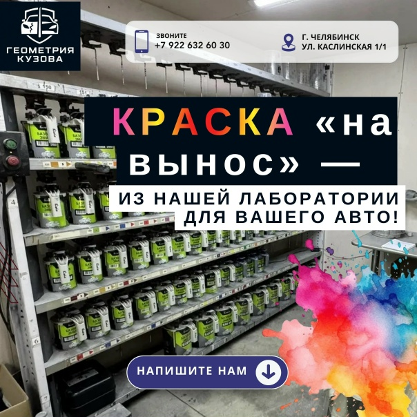
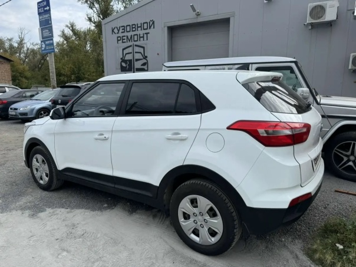
Фотографии из нашего производства: кузовной ремонт после ДТП, покраска, восстановление геометрии, сварка и борьба с коррозией. Каждый проект — с реальными сроками и результатом.


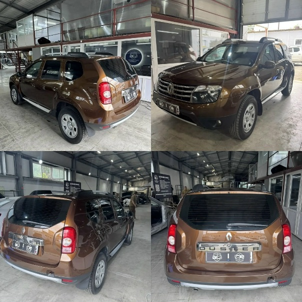


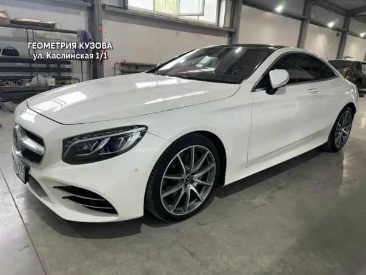
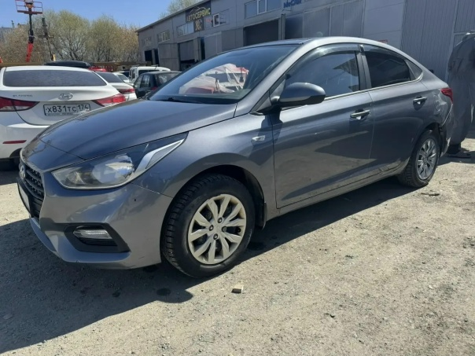


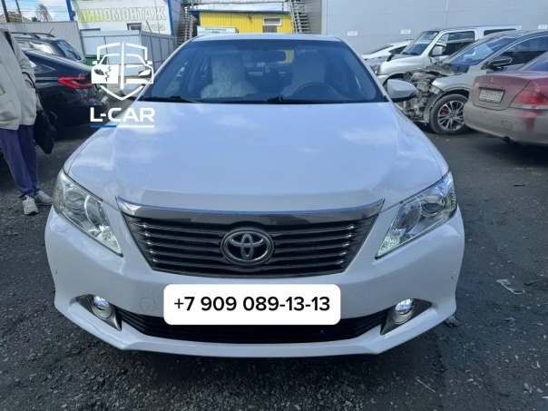

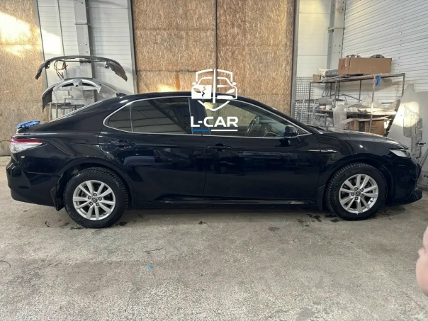

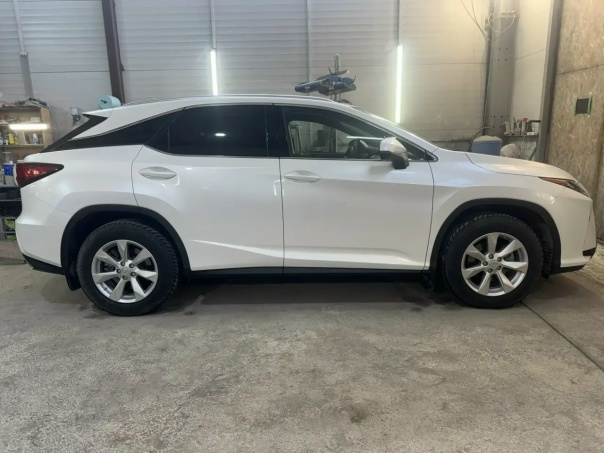
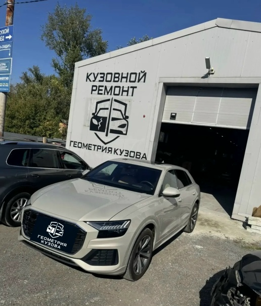
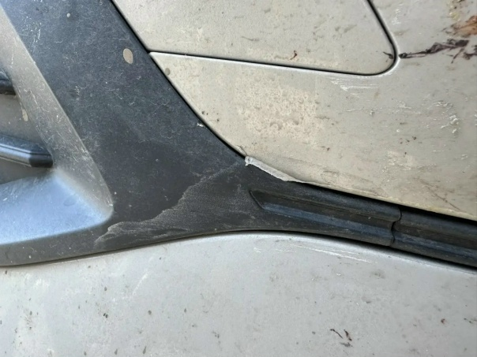
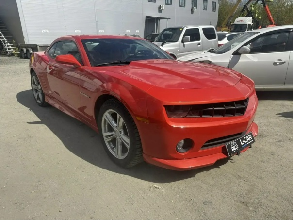
Пришлите фото повреждения — рассчитаем стоимость и сроки бесплатно
Присылаете фото повреждения — получаете предварительный расчёт.
15 минутПроводим дефектовку, согласовываем перечень работ и стоимость.
30–60 минутГеометрия → кузов → покраска → сборка. Отправляем фото на этапах.
от 1 дняПроверяете результат, подписываете акт. Гарантия на все виды работ.
30 минутСмотрите актуальные отзывы на 2ГИС и Яндекс.Картах.
Сотрудник автосервиса грамотно объяснил плюсы и минусы процедуры. Персонал приветливый, общительный. Работы выполнили в срок.
Делали рихтовку капота и ТО. Всё сделали как надо, никаких претензий. Цены нормальные.
Красили бампер, цвет сложный. Подобрали идеально, даже под солнцем не отличить. Дали гарантию.
Осмотр 30–60 минут, точная смета и сроки — сразу на месте.
Позвонить сейчас